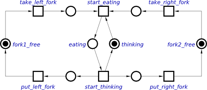
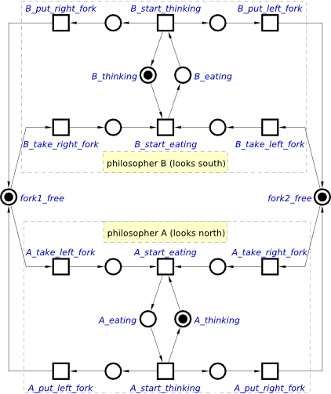

Table of Contents
Modelling with Petri nets: Dining philosophers
In this tutorial we will use the famous Dining philosophers problem to illustrate the power and convenience of the Petri nets. The problem states that there are five philosophers sitting around a table. Each philosopher either thinks or eats. There are five forks on the table shared among philosophers in such a way that each fork can be either used by a philosopher on its left or on its right. Before eating a philosopher tries to take both forks in some order. If a fork is already taken by a neighbouring philosopher, he will be waiting until the fork becomes available again. After eating, a philosopher returns to thinking while putting back both of his forks.
Modelling
Petri nets is an ideal tool for formally modelling the dining philosophers problem. The behaviour of a single philosopher can be modelled with take_left_fork, put_left_fork, take_right_fork, put_right_fork, start_eating and start_thinking transitions. The state of the philosopher is captured with a token in either the eating or thinking place and the availability of forks is determined by the presence of a token in fork1_free and fork2_free places respectively (the corresponding fork is on the table), as shown in the following Petri net.

For simplicity let us model the problem with two philosophers and two forks only. In this case, the fork1_free and fork2_free are shared by the philosophers A and B as modelled by the following Petri net.

Task 1
Capture this Petri net within Workcraft. You may want to build a Petri net model of a single philosopher first, put it in a group, and then make use of copy-paste features to replicate the model for the other philosopher. Give the places and transitions some meaningful names, e.g. as in the Petri net above. As the names of places and transitions must be unique, we prepended the node names with A_ and B_ prefixes to distinguish the models of philosophers A and B respectively.
You can make use of the Transformations→Merge selected places to glue together the places representing the same forks.
Note the difference between the names and labels:
- A name is a unique alpha-numerical ID of a Petri net node which is used as the node reference in simulation and verification.
- A label is just an arbitrary text attached to a node.
Simulation
Enter the simulation tool by pressing the ![[M] Simulate](../../help/editor_tools-simulate.png "[M] Simulate") button and play with the dining philosophers model. Initially both forks are on the table and places
button and play with the dining philosophers model. Initially both forks are on the table and places fork1_free and fork2_free are marked. Each philosopher can take any of the forks - the corresponding *_take_left_fork and *_take_right_fork transitions are enabled for both philosophers.
If you allow the same philosopher to take both forks (e.g., by clicking transitions A_take_left_fork and A_take_right_fork), then he can eat, while the other philosopher thinks. When he is finished with the meal he enters the thinking state (click transition A_start_thinking) and returns the forks (click transitions A_put_left_fork and A_put_right_fork). This trace of transitions brings us to the initial state where the philosophers compete for the forks again.
Another scenario is possible when each philosopher takes only one of the forks (e.g. click transitions A_take_left_fork and B_take_right_fork)). This leads to a deadlock as the philosophers wait for each other to return the fork, but none of them can do it until they eat.
Task 2
- Simulate the above distinctive scenarios for dining philosophers.
- Explore the navigation buttons in the Control panel and go back and forth through the trace of events in your simulation.
- Try random simulation at different animation speeds.
Verification
Various properties of a Petri net model can be verified using punf and mpsat as the backend tools (see overview of third-party tools for more details). The tool interfaces available for Petri net verification are collected under Verification menu.
The easiest and most obvious property to check is that the model does not have a deadlock - choose the Verification→Deadlock [MPSat] menu item for this. A our dining philosophers model is not deadlock-free, this should result in the following error message with a trace leading to the deadlock (you can play in the simulator by clicking the Play button).

Verification of custom properties is based on reachability analysis on the Petri net. For this a custom property should be expressed in Reach language. For example, you can try and verify that both philosophers cannot be eating at the same time:
- Open Custom property definition window via Verification→Custom properties [MPSat]….
- In MPSat settings set the Mode into Reachability analysis and the Solution into minimise cost function.
- Enter the following Reach expression as the property predicate:
$P"A_eating" & $P"B_eating". - Select unsatisfiable to denote that the property holds if predicate is unsatisfiable.
- Save this property as a preset for future use (Save as… button), e.g. under the name simultaneous eating.
The result should be similar to the following screenshot.

Let us explain how to interpret the Reach predicate. Consider an expression $P"place_name". It instructs MPSat to check if a marking is reachable where the place place_name has a token. In basic cases one can apply logical operations and quantifiers (e.g. &, |, forall, existis, etc.) to a marking which violates the property. For expressing more sophisticated properties refer to Reach language documentation.
In our case, the expression $P"A_eating" & $P"B_eating" tells MPSat to check if a state is reachable where both places A_eating and B_eating are marked with tokens, which corresponds to both philosophers eating at the same time. If such a marking is reachable, then our property is violated and a trace of Petri net transitions leading to this state is reported. If this Petri net marking is not reachable, then the property holds, as shown in the following screenshot.

Note that the Reach expression is usually formulated as the negation of the property one wants to check. If there is no reachable state satisfying this negation then the property itself is satisfied by all the reachable states.
Task 3
- Verify the model of dining philosophers for deadlocks. Simulate the trace leading to the deadlock.
- Modify the model in such a way that the deadlock is prevented (hint: force the philosophers to take the forks in particular order, one of them always takes the fork to his left first, while the other always takes the fork to his right first).
- Verify that none of the philosophers can be eating with one of the forks still on the table (hint:
($P"A_eating" | $P"B_eating") & ($P"fork1_free" | $P"fork2_free")).
Solutions
Download all the Workcraft models discussed in this section here:
Dining philosophers models (14.74 KiB, 1y ago)